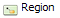
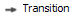
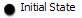
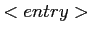
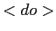
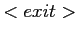
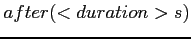

Next: C-Code Generator Up: compendium Previous: Installation Contents
Now follows a quick introduction into the YAKINDU tools and the usage. For a deeper understanding you can read the later chapters.
In the middle the main view on screen is the editor. It is still empty, but you will use it most often. On the left is also a default eclipse view, the project explorer. You will need it for the next step. The other views will be described later, when they are needed.
When YAKINDU is properly installed, we can start a small example project. This example project gives an idea of how powerful the YAKINDU tool-chain is. It contains a visual editor, a semantic and logic verification check, a simulator unit and a number of code generators.
To present the visual editor, the check mechanism and the simulator of the YAKINDU tool-chain, an example was chosen, that is simple enough to give an impression of the usage but is not to far-fetched.
The idea is to have a state machine, that represents a staircase lighting. This staircase lighting is started with a key-press and stops after 30 seconds.
The state machine itself consists of two states: „Lights On'' and „Lights Off''. The standard state within the state machine is „Lights Off'' and is entered from start-up (the so called initial state). When an occupant enters the staircase and presses the lighting button, a „keypress'' event is generated which starts the transition to the „Lights On'' state.
On entering the state „Lights On'', the staircase lighting is turned on. When the retention period has expired (after 30 seconds), the „Lights On'' state is left with a transition to the state „Lights Off'' and the lighting is turned off again.
When everything is set up, your Eclipse editor should look similar to this:
To start a new project, open the menu (File New Project) and create a new Java Project. In our example, the project is called „Example''. However, this procedure only creates a default Java project. For simplicity you should deny the question for changing to Java perspective, because we won't use anything from Java.
To create a state machine model to this environment, right-click the src directory icon and open the select wizard at New Other. Here you have to select state machine Diagram from the YAKINDU folder as shown on figure 3.4.Figure 3.5 displays the New Statemachine Diagram window, in which the name of the state machine model is set. In our example, the name is changed from default.statemachine to staircase.statemachine.
The wizard has then created two sources: the staircase.statemachine and the staircase. statemachine_diagram. The state machine itself is represented as an XML-file in staircase. statemachine and the visual representation of the state machine can be found in the staircase.statemachine_diagram file.
Now you should have a new visual editors view to create a state machine as shown in figure 3.6. Here you have all elements to create a state machine from bottom up in the elements menu. The elements that are important for our small project are , ,  and .
To start with the visual editor you firstly need a region, in which the states of the state machine reside. Therefore you need to click the icon and draw a region on the empty plain. When you have placed the last corner of the region and you release the mouse button, a new region in light green appears. At the properties area, the priority of this region is highlighted and should be set to a value. As we do not have any concurrent regions in this example, the priority is not important and could be set to any valid integer value (10 in our example). If you use more than one region, the priority specifies the processing order in which the states actions and the states transitions are processed.
To set the priority of the region afterwards, you can open the properties view. If you cannot find it in your eclipse perspective, you can open it by clicking Window Show View Others and in that menu: General Properties.
Now as you have created a region, you need a starting point of your state machine. This starting point is called initial state and can also be found as an icon () in the elements menu. As explained at the beginning of this chapter, the two states LightOn and LightOff should be installed within the state machine region.
To create a state, you have to select the () element and then open the area within the region plain. When the state outline is created, the first line within the properties area is highlighted and needs to be filled by the name of this state (e.g. LightOff). The name of a state has to be unique within a region.
After the creation and naming of the states, the actions ( ,  ,  ) should be created. In our case, the only action that should be performed is switching the light on or off. The status of the light is represented by a variable that could hold one of the two values 1 or 0. This variable needs to be created in the State Chart Interface. Within this view, you can right-click on Variables, where you get a new window to specify the variable that should be created (refer figure 3.8). Here you add the variable name (Light), the port, the IO-type and the data type. In our example all other information except for the variable name do not have to be changed.
Then you add the action Light=0; into the line within the states properties area (either within the Diagram or within the Properties view). This definition creates a new action, that is performed whenever the state LightOff is entered. So when the unconditioned state transition from the initial state to the LightOff state is performed, the internal variable Light is set to zero. The same takes place, when the state LightOff is entered through a transition from any other state.
The state LightOn is created in the same way, except that the action is set to Light=1;.
To create a transition between the Initial State and the LightOff state, you choose the element and connect the Initial State and the LightOff state. Every transition claims an expression, when this transition should be executed.
An expression can consist of one or more triggers, guard operations and actions, which can also be mixed. Additionally a transition must have a priority, to define the order, in which the expressions of different, concurrent transitions are processed.
In our example, the transition between the Initial state and the LightOff state do not need any expression, as this transition has no condition. When the expression area of a transition is left blank, the expression is represented by an asterisk (*).
The transition between LightOff and LightOn is performed, if the trigger keypress was received. Therefore a new event has to be implemented in the State Chart Interface (refer also to figure 3.8). Here you add an event that can be used as a trigger within a transition expression. Implementing a trigger with a transition needs only the trigger name as the expression string (keypress).
To specify the transition from LightOn to LightOff after 30 seconds, you use the keyword  within the transition expression string. The after() expression switches to the target state when the specified time has been expired.
So in the end your state machine looks like in figure 3.9.
We will add the plugin development nature from eclipse to the project by selecting the project, click with the right button and select Configure Convert Projects to Plugin Projects... (Picture 3.10). Your project is already selected in the next window and you can press Finish to complete. As a result some new files are created in your project. We only need the MANIFEST.MF inside the folder META-INF. Open this file by double-click and add some dependencies (See picture 3.11). This is done by clicking on Add and selecting some plugins. If you design for codegeneration the plugin com.yakindu.statechart.codegenerator.java or com.yakindu...c are the one of your choice. For platform independent modeling you can select com.yakindu.statechart.model.expressions.
Now the file can be saved and closed. It will not be neccessary to edit this file later, except you decide to use an additional codegenerator.
Create a new folder in the root of your project by right-click on Examples and selecting New Folder. The folder must be named checks and the other options can be ignored. Simply finish and create your check files inside this folder.
Check files are created by selecting the folder ''checks'' and choosing in the drop-down-menu the entry New Other. In the next window the entry Check file is found inside the category Xtend(see Figure 3.12.
Every check file starts with an import of the required and used models. For the statemachine it is sufficient to add the model statemachine. After this we want to add a check for a state. This is done by defining a context for the model element State and the severity of WARNING or ERROR. Because short names are not nice and we spelling names we define an error with the error message ''State names must have at least 8 characters''. After a colon the boolean expression folows. The expression defines the default, not the error. In our case names are longer or equals to eight characters. In figure 3.14 the result of ''state.chk'' is printed.
After saving the file and opening the statechart again, the statechart is validated after some seconds. As a result you can see a red cross in the upper right corner of state LightOn. That's because we added a check, that state names must have at least eight characters and LightOn needs only seven characters. If you put the mouse above the red cross and wait some seconds, the error message is shown in a small box.
To start a simulation you have to create a new run configuration, as shown in figure 3.15. Choose the entry Run Configuration ... to open the configuration dialog.
In this dialog you add a new YAKINDU Simulation called Example by clicking the 'New' button in the upper left corner. Then the configuration dialog is presented. After choose your Example project and the staircase state machine as your model file the dialog looks like figure 3.16. As your simulation engine, please choose YAKINDU Statechart Simulator.
When you click the Run button in the lower right corner, you start the simulation. To rerun the simulation later, you find an entry Example in your Run configuration.
On Simulation start-up make sure, that the debug view is open (refer figure 3.18). In this view, the simulation process can be started, stopped and paused. Additionally the simulation can be used in single step modus. To activate the single step modus, the simulation must be in the pause position. When a single step should be performed, the single step button can be pressed. The advantage in this modus is, that you can set the input parameter according to your simulation scenario and perform the next step, when you are done with that. To be able to change the events and variables, you must have started the simulation explicit by a click to the run button in the debug view, or by clicking on the single step button.
To be able to interact with the simulation by the input values, open the YAKINDU Statemachine View. This view can be found in the main menu under Window Show View Other.... In the appearing menu choose YAKINDU Statemachine.
In our example project, the state machine starts with a transition from the initial state to the LightOff state. This state transition is visualized by a red arrow. During a simulation an active state is highlighted in red.
After the active state has changed into LightOff, this state can only be left by a transition to LightOn. The condition expression is set to the trigger keypress. This trigger can be created in the YAKINDU Statemachine View during simulation time. To simulate a keypress, just click the ''fire'' button near the keypress event in Statemachine view. In this case, the value changes and the transition is followed. After the transition has been performed, the trigger for the transition is reset.
The same procedure is valid to set a value of a variable. The difference between a variable and a trigger is that a trigger value is reset to zero as soon as the trigger has taken effect, e.g. a transition was successful. A variable value is only changed when it is actively changed by the user or an action e.g. in or .
Some example projects are included in the YAKINDU release. They can be installed by creating the Statemachine example project. This is done by selecting File New Statemachine example project. This Wizard (see Figure 3.21) creates after all three new projects in your workspace, called ''Safe'', ''StaircaseLighting'' and ''TrafficLight''. You can read a short description of them, if you select one. After you click finish the new projects are listed in your project explorer.
Taking a deeper look at the files inside the examples (Figure 3.22), the two projects Safe and StaircaseLighting contain only two files. The .statemachine file contains the model of your state machine, and the .statemachine diagram file is for modelling. Both files are necessary to simulate and visualize the simulation. If no visualization is needed, the model themself is enough. How to simulate is described in section 3.2.8.
The files inside the third project, the TrafficLight model, includes also model files inside the model directory, but also an workflow under workflow and an complex simulation environment for practical usage with a microcontroller. This set up and handling is described in the next section 4
Now we will start with a short hands-on example to demonstrate how development is done and what especially the elements and views are for. This step is orthogonal to-the-ready to use examples in this section.
Benjamin Schwertfeger 2010-07-26